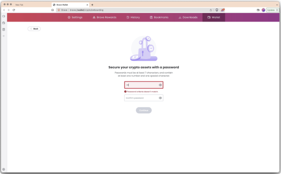
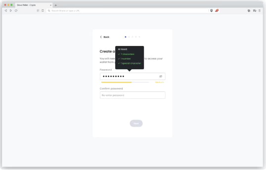
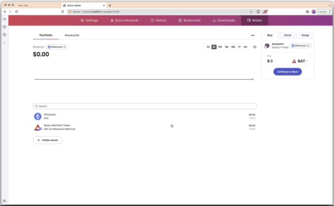
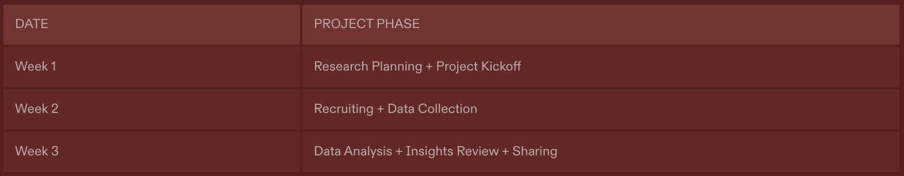

Background
In 2022, our teams focused on improving Brave Wallet, with the goals of growing its user base, reducing friction, and improving its visual appeal.
This study aims to streamline the Brave Wallet onboarding experience by identifying and addressing any pain point and friction uncovered, ultimately making it easier and more intuitive for users to navigate and understand the platform.
Problem Solving
💬 I synced up with the stakeholders, product and design, to get aligned on the focus of the study. I encouraged them to consider and share their perspectives on which aspects of the onboarding process might present the highest risks or challenges for users.
- What frictions do users have going through wallet onboarding?
- How well do novice users comprehend the onboarding flow?
Research Objectives
💬 I then translated stakeholders' concerns into research objectives, which shaped my research framework and provided a clear path for uncovering insights to improve the Brave Wallet onboarding experience.
- Identify user friction points during onboarding, with a focus on Web3-specific elements such as the recovery phrase.
- Assess design comprehension throughout the onboarding process, particularly for novice users.
Research Methods
💬 To mitigate the Hawthorne effect (the researcher effect), I decided to make the usability testing unmoderated to create the most natural context of use for the participants.
- Usability Testing (Unmoderated)
- Think Aloud
- Funnel Analysis (to measure changes)
Sampling & Recruiting
Recruiting Criteria
- Novice Web3 users who are new to Web3 wallets
- Having awareness of Web3 wallets
- Using 1 or no Web3 wallet
- Crypto exchange users who are not yet integrate into the Web3 space
- Low awareness of Web3 wallet
- Transacting on crypto exchanges recently
- Having no Web3 wallet
Sample
n=5
Sampling method — simple random sampling
Outreach
Released screener to randomly selected Brave users
Incentives
Gift cards distributed via email
Non-Disclosure Agreement (NDA)
Specified data that would be collected in this research, ensured that participants agree not to disclose any proprietary or sensitive information they may encounter during the research
Research Design
Unmoderated testing is conducted on Userlytics where I defined preliminary testing requirements including testing device platform, video and audio recording enabled, and demographic requirements.
- Intro — Build report, set testing expectations, create a good and open environment for participants.
- [Verbal] Gauge participants' previous experience with Web3 wallets and crypto exchanges to identify subtle variations.
- [Task 1] Set task scenario “you are about to explore a crypto wallet…”, ask participants to stop once password is set. Verbalize their thoughts as they go.
- Measure time-on-task
- Measure ease-of-use via 7-point Likert scale question
- Measure pass-fail
- [Verbal] Uncover anything that was confusing or hard to do for the participants.
- [Task 2] Continue from task 1, ask participants to proceed until the end. Verbalize their thoughts as they go.
- Measure time-on-task
- Measure ease-of-use via 7-point Likert scale question
- Measure pass-fail
- [Verbal] Uncover anything that was confusing or hard to do for the participants.
- Verbal] Ask participants to describe the recovery phrase part based on their understanding, what it is and its purpose.
- [Verbal] Uncover any questions participants may have along the way of onboarding but did not find answers to.
- [Verbal] Gather any other thoughts via open-ended question.
Analytics Data Collection - I partnered with data engineers to structure the anonymous analytics around user onboarding journey, specifically at which step did users drop off of the onboarding.
Data Analysis
- Thematic Analysis — Identified recurring themes, captured deeper insights into users' frustration, confusion, and positive experience.
- T-test Analysis — Compare Task Success Rate, Time On Task, Ease of Use of 2 versions of design.
- Drop-Off Rate — Calculated the drop-off rate at each step by measuring the percentage of users who leave at that specific stage.
Key Insights
💬 I shared the key insights with the key stakeholders first for review, asked them to share their thoughts. #designers #PM
- Passwords creation process lacked easily identifiable requirements, causing participants to miss the necessary criteria.
- Recovery phrase seed generation and seed verification screens were too similar, leading to confusion when participants needed to verify the seed.
- Recovery phrase process imposed a heavy cognitive load on users, resulting in long time-on-task rate.
- Sudden transition to portfolio page left novice participants uncertain about their progress in the onboarding process.
Action Items
- How might we make password creation criteria easily perceivable?
- How might we make recovery phrase generation and verification process more seamless?
- How might we welcome users to the portfolio page to make them feel confident and aware of their progress?
Wireframing
To address the research findings, I brainstormed some potential solutions to address the recovery phrase verification process via wireframing.
Original approach
Solution 1 - The seed shows as a dysmorphic shape in the generation screen for quick recognition from the verification screen.
Solution 2 - Ask users to fill in 3 words with the appointed order instead of 12 to decrease user task load.
Design changes based on the key insights
After reviewing and discussing potential solutions with the product designer and product manager, we finalized the design changes.
We decided to go with solution 3 which simultaneously differentiates the 2 screens and reduces user task load.
Before = static password criteria

After - interactive password criteria indicator

Before = static password criteria
After - interactive password criteria indicator
Before = static password criteria

After - interactive password criteria indicator
Timeline

Constraints & Reflection
Due to the limited budget for this research project, we had to carefully select a research method that fit within the constraints. With more resources, I would have increased the sample size to ensure statistically significant insights into user attitudes. This would allow for more robust analysis of the effect of design changes on users' perceived security of the Wallet, using the Mann-Whitney U Test to compare differences between groups and measure the impact effectively.
Future Studies
- I ran the same study on the new version of onboarding design, improvements were observed compared to the previous version.
- Once design change was shipped and we had enough analytics on the new version, I ran an analysis to compare the drop off rate, the change of the recovery phrase was statistically significant. Since we worked with ordinal data, I used Chi-Square Test to analyze it.